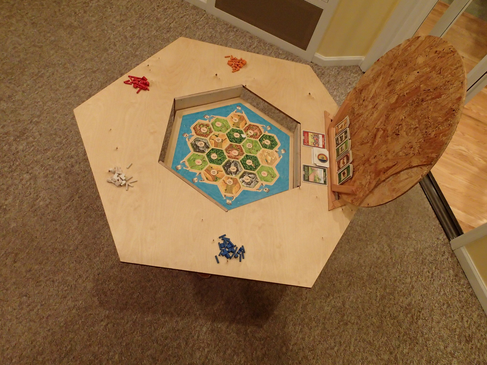
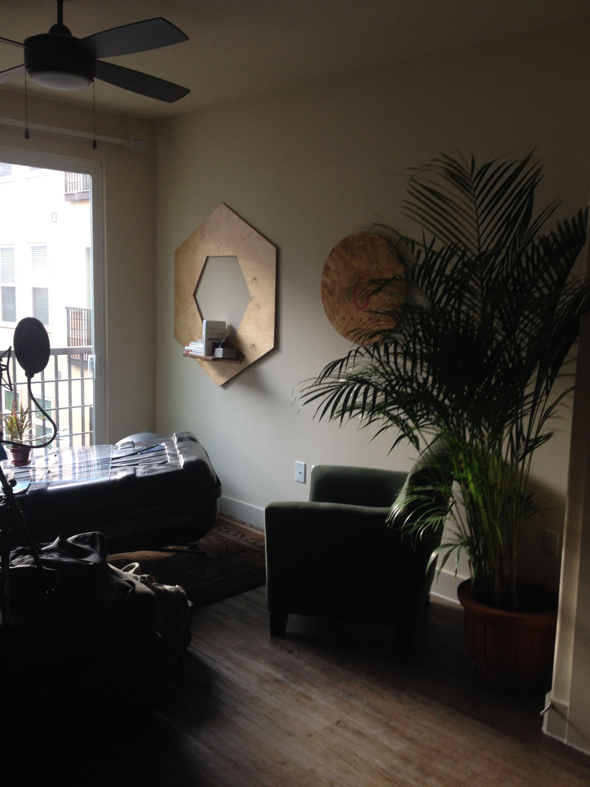

I designed and built Catan Table while studying architecture in Vermont. Our class was challenged to create a piece of furniture using a single piece of 8' by 4' plywood.
Catan Table takes its form directly from the board game Settlers of Catan.
A circular cover hides a recessed shelf. The dimensions of the shelf perfectly fit the bespoke board game. When it's time to play, the cover is lifted, and the game is ready to go.
It has been five years since I built this table. It's a pretty big table. Three years ago, I repurposed it as a more space efficient bookshelf.
Recently, I moved into my smallest apartment yet. Catan Table has shrunk once again, and is now a liquor cabinet.